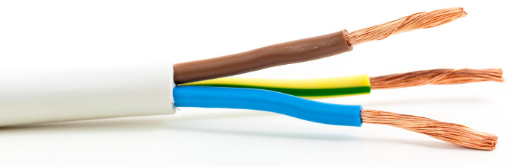
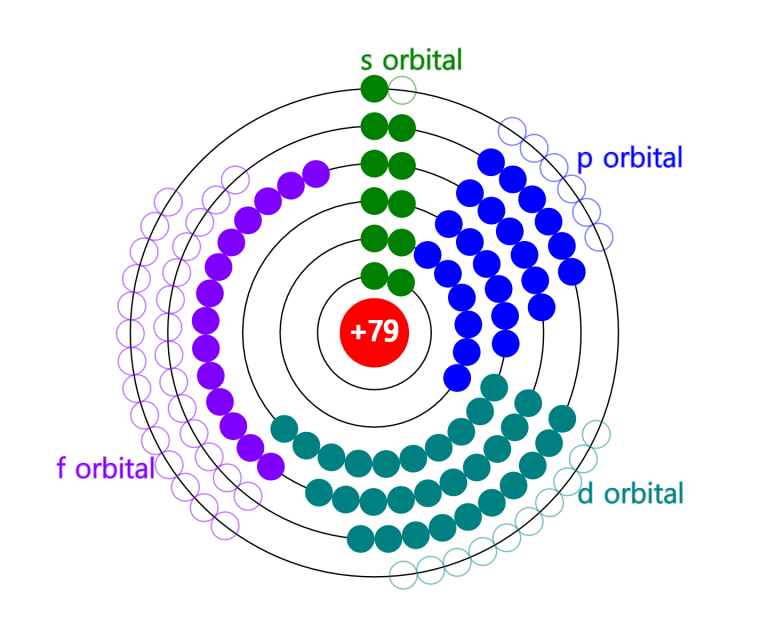
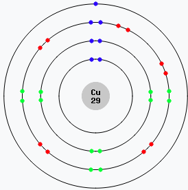
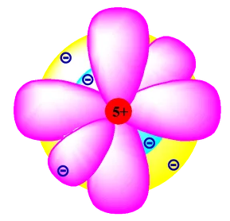

El coure i la conducció elèctrica
Per què el coure condueix l’electricitat?
El coure és un dels millors conductors d’electricitat, i per això s’utilitza en gairebé tots els cables elèctrics. Però, per què condueix tan bé? Per entendre-ho, cal conèixer la seva estructura atòmica i com es comporten els electrons dins d’un àtom.
Els electrons s’organitzen en capes
Tot i que són molt petits i es mouen ràpidament, els electrons no giren a l’atzar al voltant del nucli: segueixen un ordre i s’organitzen en capes.
Cada capa pot contenir només un nombre limitat d’electrons. La primera, la més propera al nucli, en pot tenir com a màxim 2. La segona ja n’admet 8, la tercera 18, la quarta 32, la cinquena 50, la sisena 72 i la setena 98. Aquest límit teòric per a les set capes es pot expressar així:
2+8+18+32+50+72+98 = 280 electrons
Per tant, en teoria, un àtom amb set capes podria allotjar fins a 280 electrons.
Tanmateix, en la realitat, cap àtom conegut arriba a aquest límit. L’element més pesant conegut actualment és l’oganessó (Z = 118), que té 118 electrons distribuïts en set capes.
A la imatge es mostren els 18 primers elements de la taula periòdica, des de l'hidrogen (h) fins a l’argó (Ar), amb els símbols i nombres atòmics —és a dir, el nombre de protons que tenen al nucli. En àtoms neutres, aquest nombre coincideix amb el d'electrons.
Cada element il·lustra com els electrons es distribueixen en capes successives a mesura que augmenta el nombre atòmic: l'hidrogen (h) té 1 electró a la primera capa, l'heli (he) en té 2, i així fins a l’argó (Ar), que completa la tercera capa amb 8 electrons.
Capes no plenes i reactivitat química
Quan una capa s’omple, els electrons comencen a ocupar la següent, seguint un ordre determinat i no estrictament per la numeració de les capes.
Així doncs, molts elements tenen les capes més externes no completament plenes. Això és clau per entendre el comportament químic.
Els àtoms tendeixen a guanyar, perdre o compartir electrons per aconseguir una configuració més estable, sovint amb la capa externa plena. Aquesta tendència és la base de les reaccions químiques i de la formació d’enllaços entre àtoms.
Per exemple:
- Els gasos nobles (com l’heli, el neó o l’argó) tenen totes les capes plenes, cosa que els fa molt estables i inerts: no es combinen fàcilment amb altres elements.
- En canvi, elements com el sodi o el clor tenen capes externes incompletes, i això fa que siguin reactius: el sodi tendeix a perdre 1 electró, i el clor a guanyar-ne 1, formant clorur de sodi (sal).
En el cas del coure, els electrons s’organitzen així: 2 a la primera capa, 8 a la segona, 18 a la tercera i 1 a la quarta capa.
L’electró més extern del coure està sol a la quarta capa, i és aquest el que fa que el coure sigui un bon conductor.
A la imatge, els electrons es representen en cercles concèntrics al voltant del nucli. Aquesta és una manera pràctica de mostrar com s’organitzen en capes, però cal tenir en compte que només la primera capa és realment esfèrica.
Les altres capes no són cercles perfectes ni plans: tenen formes més complexes i ben definides, que ocupen zones tridimensionals al voltant del nucli. Tot i això, aquest model ens ajuda a entendre com es distribueixen els electrons i per què alguns, com el més extern del coure, són més lliures de moure’s.
De fet, dins de cada capa hi ha diverses òrbites o regions diferents on poden estar els electrons. La primera capa només en té una, amb forma esfèrica, que recorda l’òrbita d’un planeta al voltant de la Terra. A partir de la segona, les capes ja contenen més d’una òrbita, amb formes diverses. L’important és que cada òrbita pot contenir com a màxim dos electrons, i per això, per exemple, la segona capa pot tenir fins a quatre òrbites per encabir vuit electrons. Aquesta estructura permet entendre millor com s’organitzen els electrons en els àtoms i com s’omplen les capes a mesura que augmenta el nombre atòmic.
Electrons lliures i enllaços entre àtoms
Els electrons no aparellats de la capa més externa d'un àtom (com el coure amb l'electró a la quarta capa) es poden moure amb facilitat. Els electrons externs, o de valència, són els que participen en els enllaços químics amb altres àtoms. Quan un electró no està fortament lligat, pot moure’s lliurement entre àtoms veïns.
Això és precisament el que passa en un metall com el coure: cada àtom de coure cedeix fàcilment l'electró més extern, que es converteix en un electró lliure. Aquests electrons lliures poden moure’s per tot el material com si fossin un núvol dins d’una xarxa d’àtoms positius. Aquesta mobilitat permet que el coure condueixi l’electricitat amb molta eficàcia.
Quan un àtom com el coure cedeix l’electró més extern, ja no és neutre: com que manté els mateixos protons però té un electró menys, queda carregat positivament. Aquests àtoms carregats positivament queden fixos formant una xarxa ordenada, mentre els electrons lliures es desplacen entre ells com un núvol compartit.
Aquesta combinació d’ions positius immòbils i electrons mòbils dona al metall propietats com la conductivitat elèctrica i la brillantor característica.
Conducció elèctrica en metalls
En els metalls, els àtoms estan col·locats formant una estructura ordenada, i els electrons lliures poden desplaçar-se fàcilment d’un àtom a un altre. Quan connectem un metall com el coure a una font de tensió (com una pila o una bateria), els electrons es mouen tots en una mateixa direcció: això és el corrent elèctric.

A diferència de materials com la fusta o el plàstic, que no tenen electrons lliures i són aïllants, els metalls tenen molts electrons mòbils. Això explica per què el coure, amb el seu electró 4s solitari i fàcilment deslliurable, és tan útil en el món de l’electricitat.
Resum
- El coure té 29 electrons organitzats en capes (configuració: 1s² 2s² 2p⁶ 3s² 3p⁶ 4s¹ 3d¹⁰).
- L’electró 4s és l’únic electró extern i està poc lligat al nucli.
- Aquest electró pot moure’s lliurement, convertint-se en un electró lliure.
- Els electrons lliures permeten la conducció elèctrica en els metalls.
- El coure, per la seva estructura, és un dels millors conductors elèctrics.
Comparació entre coure, plata i alumini
Els orbitals de la plata i l’alumini
Igual que el coure, la plata i l’alumini tenen estructures d’electrons particulars que expliquen el seu comportament com a conductors.
Plata (Ag)
La plata té 47 electrons. La seva configuració electrònica completa és:
1s² 2s² 2p⁶ 3s² 3p⁶ 4s² 3d¹⁰ 4p⁶ 5s¹ 4d¹⁰ (o de forma abreujada: [Kr] 4d¹⁰ 5s¹)
Aquesta configuració mostra que els orbitals 4d estan completament plens amb 10 electrons, i que l’electró desaparellat que pot moure’s lliurement es troba a l’orbital 5s.
Tot i que pot semblar que hauria d’anar al subnivell 4f, això no és així. Els orbitals f no comencen a omplir-se fins al nombre atòmic 58 (els lantànids). Per tant, en la plata, els nivells f encara no entren en joc.
L’electró 5s¹ de la plata està prou allunyat del nucli i poc lligat, per això es pot moure amb facilitat. Això fa que la plata sigui el millor conductor d’electricitat conegut, tot i que el seu cost elevat en limita l’ús pràctic.
La plata té 47 electrons. La seva configuració electrònica és una mica especial:
1s² 2s² 2p⁶ 3s² 3p⁶ 4s² 3d¹⁰ 4p⁶ 5s¹ 4d¹⁰
Tot i que podríem esperar que la capa més externa tingués dos electrons (5s²), en realitat, com passa amb el coure, la plata té un sol electró al nivell 5s. Aquest electró 5s¹ està relativament lliure i pot moure’s fàcilment, cosa que permet una conductivitat elèctrica excel·lent. A més, els orbitals 4d estan completament plens (4d¹⁰), cosa que estabilitza l’àtom.
Per què la plata no segueix exactament la regla?
Segons la regla d’ompliment energètic (regla d’Aufbau), esperaríem que la configuració electrònica de la plata fos:
[Kr] 5s² 4d⁹
Però la configuració real és:
[Kr] 4d¹⁰ 5s¹
Per què? La resposta té a veure amb l’estabilitat especial dels orbitals d. Els subnivells d⁵ (mig plens) i d¹⁰ (completament plens) tenen una estabilitat addicional respecte d’altres configuracions. Això es deu a com es distribueixen els electrons en els orbitals d, minimitzant la repulsió entre ells.
En el cas de la plata, l’àtom guanya estabilitat quan un electró del 5s “salta” al subnivell 4d, completant-lo amb 10 electrons. Aquest intercanvi té un cost energètic molt petit, però el guany d’estabilitat per tenir el subnivell 4d complet és més gran.
Això també passa amb altres elements com el coure (Cu) i el crom (Cr), que també tenen configuracions que “trenquen” lleugerament la regla general per assolir una configuració més estable.
Resum visual
- Configuració teòrica: [Kr] 5s² 4d⁹
- Configuració real (observada): [Kr] 4d¹⁰ 5s¹
- Raó: tenir el subnivell d complet (d¹⁰) és energèticament més estable
Alumini (Al)
L’alumini té 13 electrons. La seva configuració electrònica és:
1s² 2s² 2p⁶ 3s² 3p¹
Això vol dir que l’alumini té 3 electrons de valència (3s² 3p¹), però només un d’ells (el 3p¹) està sol i no aparellat, la qual cosa facilita la seva participació en reaccions i enllaços. Els orbitals p tenen forma de vuit i s’orienten en tres direccions diferents (x, y, z). L’electró 3p¹ és prou allunyat del nucli per moure’s amb relativa llibertat, i això permet que l’alumini condueixi l’electricitat, tot i que no tan bé com el coure o la plata.
L’alumini no té tants electrons lliures com la plata o el coure, però el seu baix pes i preu fan que sigui molt útil per transportar electricitat en grans distàncies.
L’alumini té 13 electrons. La seva configuració electrònica és:
1s² 2s² 2p⁶ 3s² 3p¹ (o de forma abreujada: [Ne] 3s² 3p¹)
Té tres electrons de valència, però només un d’ells (3p¹) està desaparellat. Aquest electró és el que pot participar en enllaços o moure’s en determinades condicions. Com que està en una capa més externa i menys lligada, també pot contribuir a la conducció elèctrica, tot i que amb menys eficiència que el coure o la plata.
Tot i que el coure és molt utilitzat com a conductor elèctric, hi ha altres materials que també condueixen molt bé l’electricitat. Els més destacats són la plata i l’alumini. Vegem com es comparen en diversos aspectes:
| Propietat | Plata | Coure | Alumini |
|---|---|---|---|
| Conductivitat elèctrica | La més alta de tots els metalls | Molt alta (lleugerament inferior a la plata) | Inferior al coure, però bona |
| Durabilitat | Excel·lent, però pot oxidar-se lleugerament | Excel·lent, resistent a la corrosió | Menys resistent: forma una capa d'òxid protectora |
| Cost | Molt alt | Moderadament alt | Baix |
| Pes | Alt | Mitjà-alt | Molt lleuger |
| Ús habitual | Electrònica de precisió | Instal·lacions elèctriques, motors, cables | Línies d’alta tensió, estructures lleugeres |
Resum dels orbitals i la conducció
- Plata (Ag): Té un electró desaparellat al 5s¹. Orbitals 4d plens. Molt bona conductivitat.
- Coure (Cu): Té un electró desaparellat al 4s¹. Orbitals 3d plens. Gran conductor.
- Alumini (Al): Té un electró desaparellat al 3p¹. Conductor mitjà, però molt lleuger i barat.
Per què no fem servir sempre la plata?
Tot i que la plata és el millor conductor d’electricitat, no es fa servir habitualment per cables elèctrics perquè és molt cara. Es reserva per a aplicacions especials, com circuits electrònics sensibles o contactes elèctrics on la pèrdua d’energia ha de ser mínima.
Quan es fa servir l’alumini?
L’alumini és més lleuger i més barat que el coure, i per això es fa servir en línies d’alta tensió o en aplicacions on el pes és un factor important. Tot i tenir una conductivitat menor, el seu pes lleuger permet utilitzar cables més gruixuts sense que siguin difícils de manipular.
El coure, el millor equilibri
El coure representa un bon equilibri entre eficiència, durabilitat i cost. Té una conductivitat molt elevada, és resistent a la corrosió, fàcil de treballar i més assequible que la plata. Per això, és el conductor més habitual en sistemes elèctrics domèstics, industrials i electrònics.